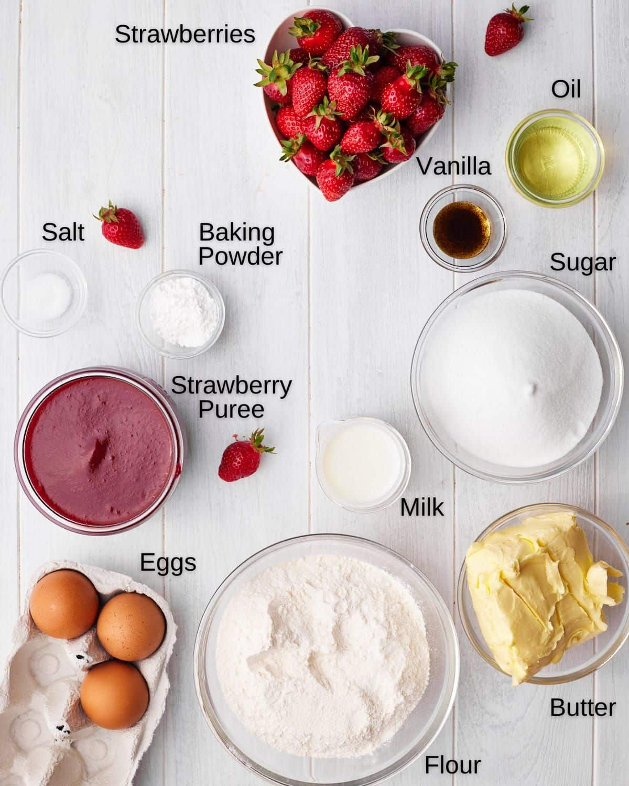

This strawberry cupcake recipe is like a little party in a wrapper bright and bursting with fresh berry goodness.
The strawberry purée keeps every bite soft and juicy, while the vanilla and butter give it that cozy, homemade magic.
They're the kind of cupcakes that disappear fast at birthdays, picnics, or honestly any day that needs a pop of pink fun!
Ingredients
What You'll Need
- ¾ cup Whole Milk
- ¼ cup Vegetable Oil
- 3 large Eggs
- 2 ¾ cups Cake Flour
- 1 ¾ cups Granulated Sugar
- 1 ½ tablespoons Baking Powder
- ½ teaspoon Salt
- 1 tablespoon Vanilla Extract
- 2 sticks Unsalted Butter (room temperature)
- ¾ cup Strawberry Purée

Making the Cupcake!
Step-by-Step
- Preheat the oven to 335°F (170°C) and line a muffin pan with cupcake liners.
- Mix the milk, eggs, and vanilla together. Whisk lightly and set aside.
- Add the flour, sugar, baking powder, and salt to the bowl of your mixer and turn it on low with the paddle attachment.
- Slowly add the butter, one small chunk at a time, until the mixture looks like chunky breadcrumbs.
- Add the oil and strawberry purée, then increase the mixer speed to medium and beat for exactly two minutes.
- Scrape down the sides of the bowl to remove any lumps.
- Slowly pour in the milk-egg mixture and mix on low until just combined.
- Divide the batter evenly into the cupcake liners.
- Bake for about 18 minutes, or until the tops are slightly springy to the touch.
- Let the cupcakes rest in the pan for five minutes, then transfer them to a cooling rack to cool completely.